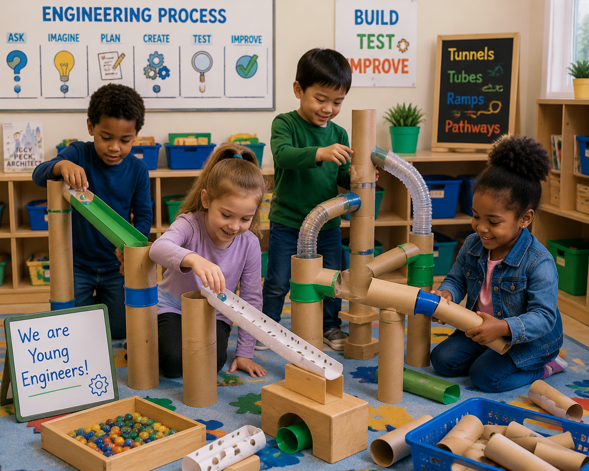

Build pathways, ramps, tunnels, and marble runs while encouraging engineering thinking, problem solving, creativity, and design through hands-on exploration.

Children investigate how tubes and tunnels can be connected, supported, and designed. Through building experiences, children explore pathways, movement, structures, and engineering solutions while testing their ideas.
Hands-On Activities
Learning Centers
Engineering Challenges
Printable Resources
Children investigate how tubes and tunnels can be designed, connected, and used to move objects.
Children explore pathways, openings, connections, and how objects travel through different designs.
Children test ramps, tubes, and pathways while exploring gravity, speed, and movement.
Children plan, create, test, and improve designs through engineering challenges.
Children explore gravity, movement, force, cause and effect, and how objects travel through pathways.
Children compare lengths, sizes, shapes, distances, and patterns while creating designs.
Children develop engineering vocabulary while explaining ideas, designs, and discoveries.
Children imagine, design, build, and improve structures using open-ended materials.
Cardboard Tubes
Boxes & Recycled Materials
Balls & Moving Objects
Ramps & Supports
Connectors & Tape
Measuring Tools
Children investigate pathways, movement, structures, and engineering ideas through hands-on building experiences.
Children investigate different tubes, shapes, sizes, and materials while discovering how objects move through them.
Children create pathways and test how objects travel through different designs.
Children design tunnels using recycled materials while exploring stability and structure.
Children build marble runs and investigate gravity, speed, direction, and movement.
Children experiment with connecting tubes and materials to create larger systems.
Children plan, test, redesign, and explain their creations like young engineers.
Children use engineering thinking to design pathways, structures, and moving systems.
Children connect tubes and materials to create pathways for objects to travel.
Children design ramps and tunnels while exploring speed, movement, and gravity.
Children build supports and test how their designs can stay strong.
Create tunnels, pathways, ramps, and marble runs using open-ended materials.
Explore gravity, movement, force, and cause-and-effect relationships.
Build large structures, transportation systems, and connected pathways.
Draw designs, create blueprints, and decorate engineering creations.
Explore books about construction, transportation, inventors, and engineering.
Measure tubes, compare lengths, count pieces, and explore patterns.
Children practice the engineering process by planning, building, testing, and improving.
Children discuss ideas, draw designs, and decide how their structures will work.
Children use tubes, boxes, and materials to create their designs.
Children test movement, make changes, and improve their engineering solutions.
Children explore different tubes, tunnels, and pathways while investigating movement and design.
Explore Week One →Children build pathways and explore how objects move through different designs.
Explore Week Two →Children create marble runs while investigating gravity, speed, and problem solving.
Explore Week Three →Children plan, build, test, and improve their own tube and tunnel engineering creations.
Explore Week Four →Plan engineering experiences focused on design, movement, problem solving, and STEM exploration.
Document children's creativity, collaboration, communication, and engineering thinking.
Encourage families to build, create, and explore engineering concepts together at home.
Resources to support engineering design, STEM exploration, and classroom investigations.
Children record observations about tubes, pathways, and movement.
View PrintableChildren record testing results and changes made to their designs.
View PrintableFamilies can continue engineering exploration through building, creating, and problem solving together.
Use boxes, tubes, and household materials to create tunnels and pathways.
Test how toys and objects move through ramps, tubes, and different pathways.
Encourage children to imagine, create, test, and improve their inventions.